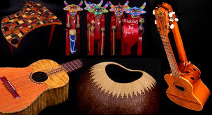
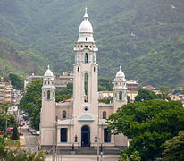
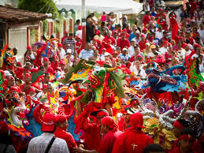
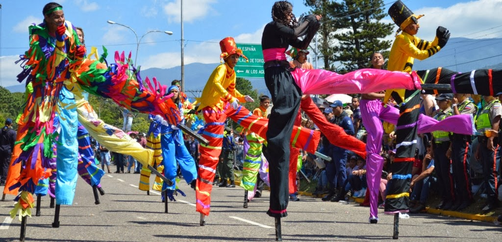
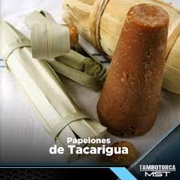

Venezuela es un país rico donde se mezclan tres culturas distintas como la española, la indígena y la africana. Y prueba de ello son la gran parte de costumbres y tradiciones de Venezuela que fueron traídas del extranjero en especial de España y de varios países africanos. La cultura indígena, también ha influenciado muchísimo en las tradiciones populares del país, de hecho, actualmente una parte importante del país proviene de las diferentes etnias indígenas existentes todavía en Venezuela, donde encontramos a los Warao como una de las tribus más representativas del país junto a los Yanomamis.
Aunque mucha gente considera por igual las costumbres y las tradiciones, hay que tener en cuenta que cada una tienen un origen diferente. Por costumbre podemos considerar las prácticas de los venezolanos que se encuentran tan arraigadas que los identifican como pueblo. La mayoría de tradiciones venezolanas son de origen europeo, africano y por supuesto indígena. Cada zona tiene unas costumbres propias son se muestran la devoción a un santo, leyendas populares y sobre todo las fiestas populares.

Arquitectura
La arquitectura tradicional venezolana es una combinación de la cultura indígena tradicional junto con las distintas culturas traídas del extranjero, al igual que sucede con muchas otras características del país. Los materiales utilizados al igual que las técnicas utilizadas son las mismas que han utilizado los ancestros, pero adaptándose al medio ambiento y a los cambios ortográficos de las zonas donde se instalan.

Diablos danzantes
Cada año en la celebración del Corpus Christi, donde se reafirman las creencias religiosas y mágicas del bien sobre el mal se celebra una danza ritual protagonizada por los Diablos danzantes en diferentes zonas del país. Los diablos representan a Lucifer llevando coloridas vestimentas y una máscara que representa la intención de rendirse al santísimo sacramento.
Los diablos se agrupan en colectivos o sociedades, llevan cruces, rosarios o cualquier amuleto religioso y durante la festividad van rezando oraciones, incluyendo una misa. Visten de pantalón, camisa y capa de color rojo y además llevan colgando de la ropa cascabeles y sonajeros. Las máscaras se diseñan con colores llamativos y apariencia feroz, o al menos es lo que intentan. El traje de los diablos se componen de diversos accesorios como son el rabo, los cencerros, el mandado y la maraca. Siendo una tradición muy popular en todo el país, podemos encontrar diferentes diablos danzantes distribuidos a lo largo del país, pero los más importantes son los de Yare, Naiguatá y de Chuao.

La Feria de San Sebastián
La Feria Internacional de San Sebastián es una de las tradiciones de Venezuela más importantes del país. Se celebra en la ciudad de San Cristóbal, situada en el estado de Táchira, en la segunda quincena del mes de enero. También conocida como la Feria Taurina de Venezuela es el escenario ideal para que los amantes de tauromaquia del país puedan disfrutar de los grandes toreros a nivel mundial.
Esta feria atrae a un gran número de visitantes extranjeros y es una experiencia que ofrece grandes posibilidades de entretenimiento en el estado de Táchira como en en todo el país, ya que además de toreros de reconocido prestigio internacional, también acuden a la feria grandes profesionales del país, que no son pocos.

Papelones de Tacarigua
Tacarigua está compuesta por comunidades pesqueras y agrícolas situadas en la isla de margarita. Desde hace muchos años elaboran los papelones para uso interno y para vender a las demás comunidades. El papelón proviene de la caña de azúcar tiene forma cónica, mide unos 20 centímetros de alto y una base de 10 a 15 centímetros. Se utiliza generalmente para endulzar el chocolate o el café, para hacer guarapos cosidos o crudo con limón.

Sombreros de cogollo
Los sombreros de cogollo son la principal fuente de ingresos de la isla Margarita. A pesar su su aspecto simple, la fabricación manual de estos sombreros para nada es sencilla y requiere de mucha habilidad para poder confeccionarlos. Este tipo de sombreros tuvo durante mucho tiempo gran aceptación en el país y en las islas del caribe, pero en los últimos años se ha reducido un poco la producción adaptándose a las necesidades actuales. Además de sombreros con los cogollos también se hacen bolsos, alfombras, gorras…